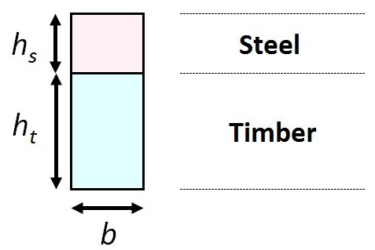

Your zID: (e.g. z1234567, no spacing before or after)
E-learning Module for Mechanics of Solid
Module Creator: Dr Xiaojun Chen
All Rights Reserved by UNSW
A composite beam with a rectangle cross-section is shown below (upper part made of steel, lower part made of timber, drawn not to scale):

The width of the beam is b = mm.
Height of the steel part is hs = 100 mm, height of the timber is ht = 200 mm.
The Young's module for steel Es = 200 GPa,
The Young's module for timber Et = 13.33 GPa.
Please click the "Start" button and follow the instruction to finish the question:
Question: A moment M = 100 kN-m is applied on the cross-section. The moment causes compression stresses at the top of the beam. Assume the stress are linearly elastic
In order to calculate the stress and stain distribution on the cross-section, we need to transform one of the material into an equivalent amount of the other. Here we will transform the steel into timber. The ratio of the elastic moduli of the two material is:
n = Es / Et = . (rounded to 1)
The transnformed width of the steel can be calculated as:
b × n = mm
The transformed section is shown below (red dot is the centroid of the whole transformed section):
Please calculate the location of the centroid and Ixx
ȳ = mm (rounded to 0.001mm),
Ixx = mm4 (4 significant figures)
The above figure shows the stress and strain though the depth of the cross-section. The stress in the steel is the stress in the timber multiplied by the modular ratio of the two elastic moduli. Please calculate the stress of the top σtop and bottom σbtm:
σtop = - MPa (rounded to 0.01MPa),
σbtm = MPa (rounded to 0.01MPa)
Please calculate the strain of the top εtop and bottom εbtm:
εtop = - (4 significant figures),
εbtm = (4 significant figures)
Please calculate the curvature κ:
κ = m-1 (4 significant figures),
If you finished both questions, press the following button to submit